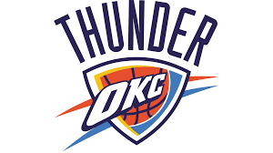

Los New Orleans Pelicans1 (en español: Pelícanos de Nueva Orleans) son una franquicia profesional de baloncesto estadounidense con sede en Nueva Orleans, Luisiana. El equipo compite en la División Suroeste de la Conferencia Oeste de la National Basketball Association (NBA). Disputan sus encuentros como locales en el Smoothie King Center.
Unos Hornets más sanos que temporadas anteriores lograron un balance de 29-12 a mitad de temporada. A 3 de febrero de 2008 contaban con el mejor récord de la Conferencia Oeste, por lo que Byron Scott inmediatamente se convertía en el entrenador del Oeste en el All-Star Game de 2008 disputado precisamente en Nueva Orleans. Junto a Scott, David West y Chris Paul fueron seleccionados, éstos como jugadores reservas,16 y Stojakovic participó en el Concurso de Triples. El 21 de febrero, los Hornets traspasaron al veterano base Bobby Jackson a Houston Rockets a cambio de Bonzi Wells y Mike James.17.
Desde el traslado desde Carolina del Norte a Luisiana, los Pelicans acumulan un registro de 528 victorias y 604 derrotas, y se han clasificado seis veces para los Playoffs. Su mayor logro hasta el momento es un título de división conseguido en 2008 y la clasificación hasta las semifinales de Conferencia esa misma temporada.
 Indice
Indice